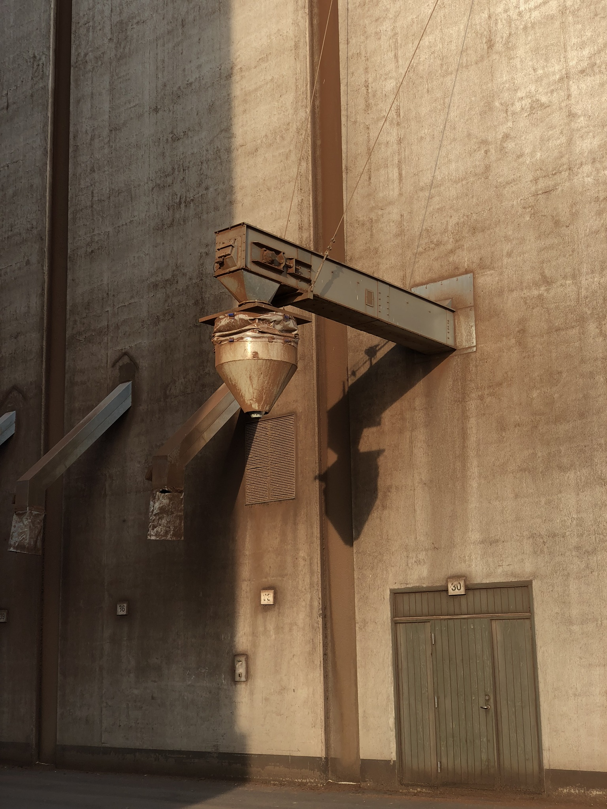
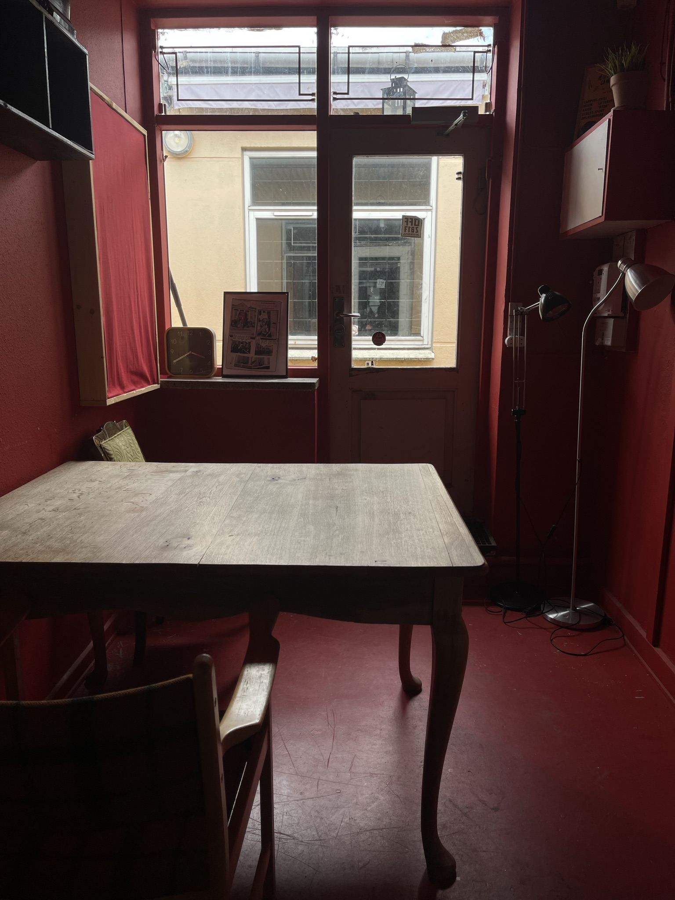
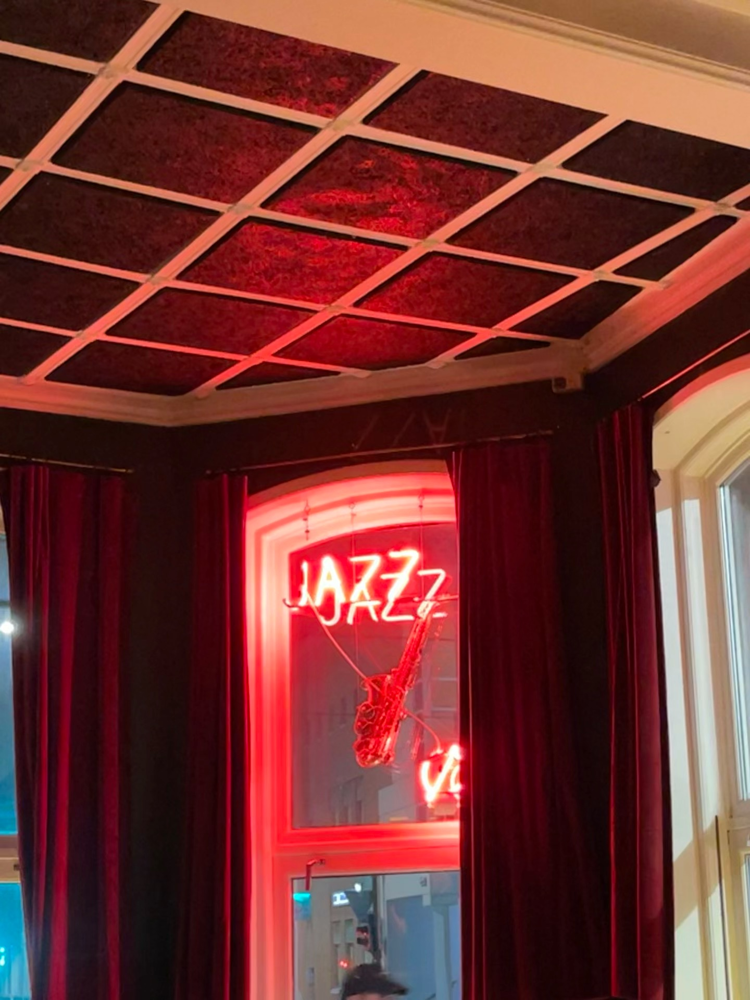
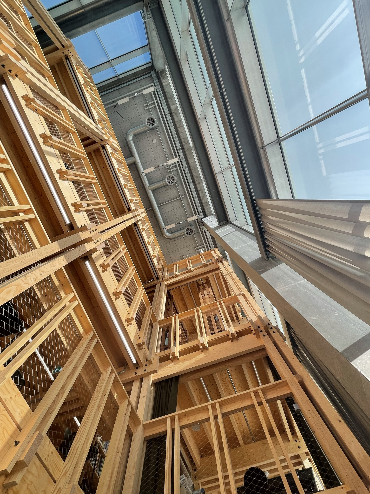
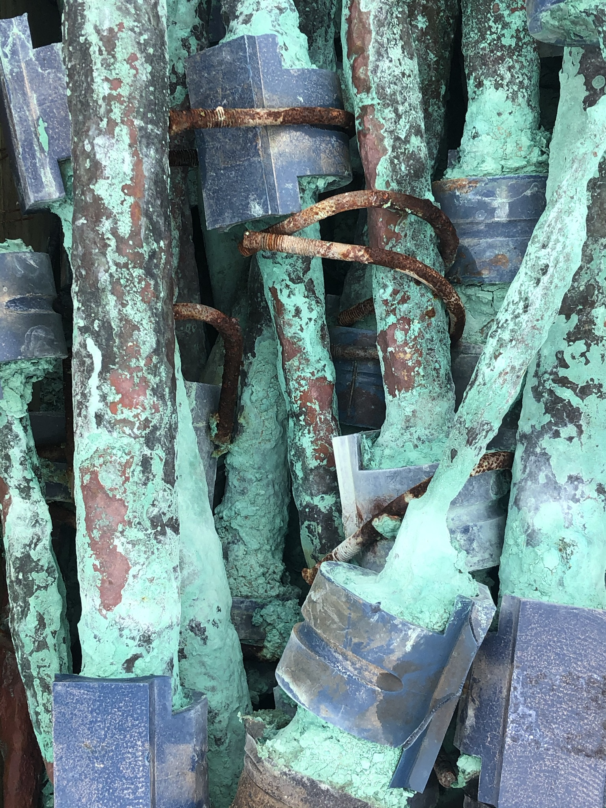
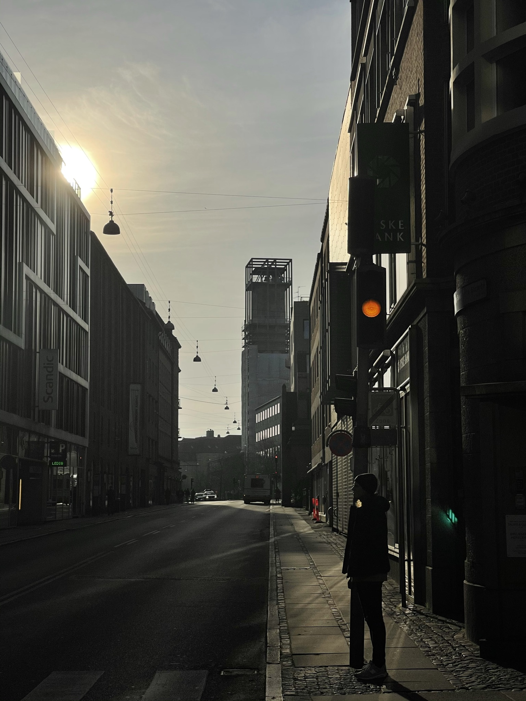
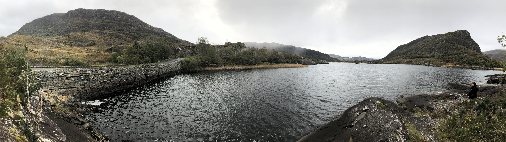

Andreas Krautwald
Photography and other projects
Rail Foundation
Soundcloud
Mastodon
Github
Photography
Derrycunihy, County Kerry, Ireland
Cluain Mhic Nóis, County Offaly, Ireland
Cluain Mhic Nóis, County Offaly, Ireland
Black Rock, County Cork, Ireland
Black Rock, County Cork, Ireland

Aarhus, Denmark

Aarhus, Denmark

Aarhus, Denmark

Aarhus, Denmark

Samsø, Denmark

Aarhus, Denmark

Gortracussane, County Kerry, Ireland